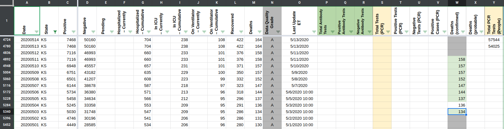
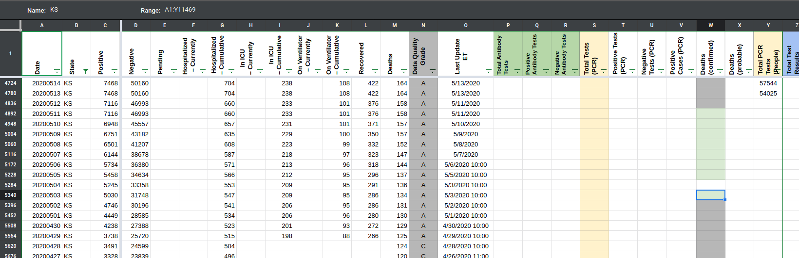

[Unknown States] Some Deaths(confirmed) values before 5/11 got deleted
State or US: Unknown States
Describe the problem Some cells in the Deaths (confirmed) column were relying on a formula from the Checks tab. When the Checks tab was purged, it caused some of the values in Deaths Confirmed column to be impacted.
Comments
In the most recent version of States Daily.
We have REFs only in KY Total Tests (PCR)
All the REFs are part of formulas (or bad formulas).
We have formulas in other places too, some are numeric (e.g., =3684+101) which should be fine and stable, others might not be as stable =sum(C3258:D3258)
This is a file of all formulas currently in the public table. They’re fine, but can cause problems during fixes and backfills. formulas.csv.txt
Attached zip file for before/after formula fix – all the values are the same, but there are no cell refs states_daily.zip
This issue was originally opened for KS Deaths (confirmed) was a formula leading nowhere.
Now we have a few values in this column, instead of the formula. Did we ever have a confirmation that death count was confirmed deaths and then it got revised?
It happened with cases on May 7th – Case count started including both confirmed and probable cases
The 9 values for KS Deaths (confirmed) column (dates 3-11/May) are there by mistake. They were not deleted when confirmed vs probable death metrics were cleaned up prior to publishing these metrics in the API because it was a formula, and the cells looked empty. Earlier this week, the cells were re-filled with a value, but it should actually remain empty.


We have many states with this empty-formula turned to numbers between May 3rd to 11th. All of them now got values in these cells, values that I think weren’t supposed to be there, because they looked empty, so were skipped during the cleanup
Numbers should be there
- [x] Empty formula was replaced with numbers matching
Deaths (confirmed): AK, MA, ME, MN, MP, NC, NM, C, TN (got filled with part of that period), VI, VT, WA, WI - [x] AL – the number for May-3rd differs from
deathfield. I’ll follow screenshots for May 3rd and update from 292 to 290 - [x] FL https://github.com/COVID19Tracking/issues/issues/542 The number for 3-May looks like a mistake. The replacement of the empty-cell formula with the value actually did a small backfill here, because when we first published
Deaths (confirmed)field it wasn’t there, we only started collecting it on May 12th. I’m updating the value for May 3rd to be the same asDeaths
{kind=link}
Numbers should be there but need to be checked:
- [x] IN
- [ ] KY – the numbers there are before we started populating this field, and the number for May 3rd is higher than
Deaths (confirmed and probable). The screenshot for KYs page shows the same number as inDeaths (confirmed and probables). KY is most likely correct, no way to 100% verify - [x] NJ
- [x] PR numbers should be there. There are no screenshot for this tab (it’s a small internal tab in a dashboard widget) I compared to easy-dc logs
{kind=link}
Numbers should not be there
- [x] Formula was replaced with empty and it’s the expected state: AR, AS, AZ, CA, HI, IL, MS, NE, PA
- [x] CO https://github.com/COVID19Tracking/issues/issues/565
- [x] DC https://github.com/COVID19Tracking/issues/issues/539
- [x] GA https://github.com/COVID19Tracking/issues/issues/533
- [x] GU https://github.com/COVID19Tracking/issues/issues/543
- [x] IA https://github.com/COVID19Tracking/issues/issues/545
- [x] ID https://github.com/COVID19Tracking/issues/issues/576
- [x] MO https://github.com/COVID19Tracking/issues/issues/531 the issue also states that we started reporting
Deaths (probable and confirmed)andDeaths (confirmed)on the 12-May, so values before that are unlikely there anyways - [x] MT https://github.com/COVID19Tracking/issues/issues/546
- [x] NH https://github.com/COVID19Tracking/issues/issues/527
- [x] NM https://github.com/COVID19Tracking/issues/issues/528
- [x] NV https://github.com/COVID19Tracking/issues/issues/532 field was cleared and should stay clear
- [x] NY https://github.com/COVID19Tracking/issues/issues/552 Death (confirmed) should not be populated
- [x] OK https://github.com/COVID19Tracking/issues/issues/534
- [x] OR There’s no issue, but I conclude that the values should not be there because they weren’t there: not in 1-Aug version of OR’s daily, and not on the 1st day it was published, 8-July
- [x] RI https://github.com/COVID19Tracking/issues/issues/523
- [x] SD https://github.com/COVID19Tracking/issues/issues/548
- [x] UT https://github.com/COVID19Tracking/issues/issues/526
- [x] WY Based on https://github.com/COVID19Tracking/issues/issues/530#issuecomment-649842532 WY should not have values for Death (confirmed) in these dates
I’ll take over this issue to handle all bad refs and formula investigations in States Daily. #734 is another instance